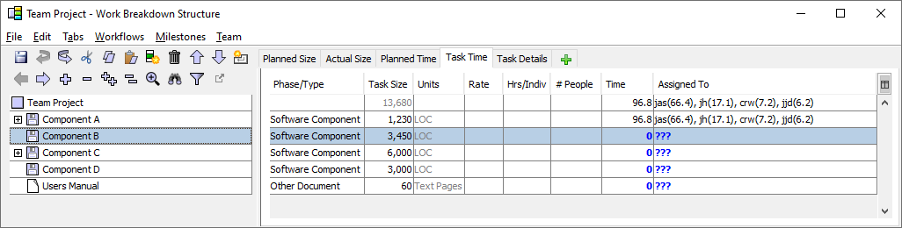
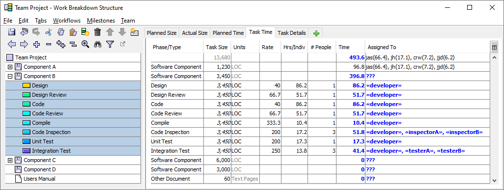

In older projects, the workflow editor offered the option to enter productivity rates for workflows. That functionality became obsolete with the introduction of proxy estimation tables, and is no longer available for projects created with Process Dashboard 2.6.3 and higher. This section describes the obsolete functionality for teams working with older projects.
The workflow editor offers a number of advanced columns for customizing workflow behavior. On older projects, these include the Rate and Units columns, which can be used to generate time estimates from size. If you happen to know the typical productivity rates (based on historical or estimated team averages) for all the tasks in a workflow, you can enter those rates in this column. For example, you might wish to state that a Code Review task takes place at a rate of 200 LOC/Hr, or that a PSP Task completes at a rate of 20 LOC/Hr. Here is an example for a possible team software development process:
When you apply this workflow to a component in your team project, the WBS Editor will look at the estimated size for the component. It will use that size, along with the percentages and productivity rates you have entered, to generate an effort estimate for each task in the component.
Note that that this behavior differs from the "percentage-only" behavior that is typically used. This is a very important consideration. When you examine a single team workflow, if any task has a number in the Rate column, the workflow will use size estimates to produce time/effort estimates. If no rates are present, the workflow will let you enter a top-level time estimate, then use the percentages to spread the time across the tasks. You should decide which mode you wish to use for each workflow, then either (a) leave the rate column blank, or (b) enter rates for every task.
When a task in a workflow is performed by more than one person, effort estimates will be generated differently based on the presence of a value in the "%" column. If you have placed a number in the "%" column, the WBS will understand that this task is a percentage of an overall workflow; so that percentage describes the total amount of work that will be spread across those individuals. If you leave the "%" column blank and enter a Rate, the WBS will understand that each individual is independently working at that rate.
An example illustrates this best. When you examine the "Simple Process" workflow above, three individuals will be working on the "Code Inspection" task. That task has been described as a task that requires "200 LOC/Hr". So if you apply this workflow to a component that has 400 LOC, three people will be working on this task, and each one will spend two hours. In contrast, the "Integration Test" task has been described as being 12% of a workflow that requires 10 LOC/Hr. For a 400 LOC component, that end-to-end workflow will take 40 hours. 12% of 40 hours is 4.8 hours, so this is the total time that will be allocated to the "Integration Test" task. Three people are assigned, and the time will be spread across them equally, so each one will spend 1.6 hours.
The Rate column can be a useful way to produce times estimates, but it does have a number of important limitations. For example, it requires the team to apply detailed workflows to "placeholder" components in future iterations, just to answer high-level questions about when the overall project could finish. And it doesn't provide flexibility for a single process to have a range of different rates based on the complexity of a given component. For these and other reasons, the recommended best practice is to capture productivity rates in proxy estimation tables, leave the Rate column blank, and only use the percentage column to describe the allocation of workflow time.
To use a rate-driven workflow for planning, begin by entering a size estimate on a WBS component:

When you apply the workflow to the component, your size estimate will be combined with the workflow rates and percentages to generate planned times for each task:
